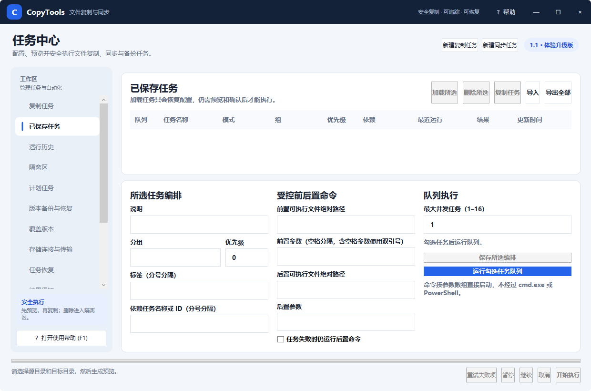

CopyTools 使用帮助快速上手
五分钟完成第一次复制
以下流程以“增量复制”为例。增量复制只传输新增或发生变化的文件，适合把工作目录定期复制到移动硬盘或另一块磁盘。
1. 新建任务
单击窗口右上角“新建复制任务”，或在左侧进入“复制任务”。给任务填写一个能辨识用途的名称，例如“设计资料到移动硬盘”。
2. 选择源路径
单击“加目录…”选择一个或多个源目录；也可以“加文件…”，或把文件和目录直接拖到窗口。源路径列表中一行一个路径。
3. 选择目标目录与模式
单击目标目录右侧的“浏览…”，再选择“增量复制”。第一次使用不要选镜像同步，因为镜像可能需要删除目标端多余文件。
4. 生成并审查预览
单击“生成预览”。操作预览会显示动作、相对路径、大小和原因。可勾选不希望执行的条目，再单击“排除勾选项”。
5. 开始执行
确认源和目标无误后单击“开始执行”。运行中可暂停、继续或取消；任务结束后可在“运行历史”查看每个文件的结果。
快捷键：Ctrl+P 生成预览，Ctrl+Enter 开始执行，Ctrl+S 保存任务，F1 打开帮助。
保存为可重复任务
- 在复制任务页完成源、目标、模式和高级选项配置。
- 单击“保存任务配置”或按 Ctrl+S。
- 进入“已保存任务”，勾选需要运行的任务。
- 可直接加载、复制任务、导出为 JSON，或组成带优先级和依赖关系的队列。

图 2：已保存任务可加载、导入导出，并可配置队列、优先级、依赖和前后置命令
执行前检查清单
- 源与目标不是同一路径，目标也不位于源目录内部。
- 预览中的删除数量和比例符合预期。
- 重要数据至少还有一份独立备份。
- 移动硬盘、网络共享或远程存储连接稳定。
- 需要内容级可靠性时，在高级设置中选择 SHA-256 校验。
CopyTools 的“预览”是基于当时文件状态生成的。执行前若文件发生变化，程序会重新检查关键元数据并跳过有竞态风险的条目。